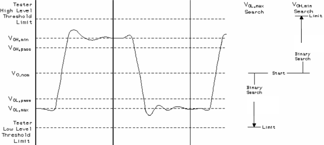
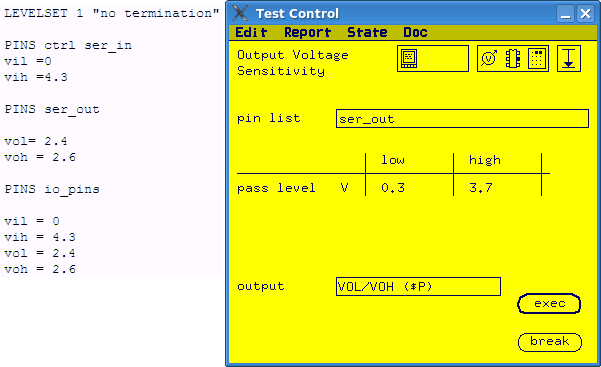

Output Voltage Sensitivity Conversion
The output voltage sensitivity test can be pass/fail test or value test.
About this task
For pass/fail test, you can convert the test function to an
ac_tml.AcTest.functionalTest by changing Vol and
Voh to the pass level specified in the test function.
For value test,
you can convert the test function to ac_tml.AcTest.parametricFunctionalTest
test method. Firstly, you need to define a spec to control Vol and a
spec to control Voh. Then in the
ac_tml.AcTest.parametricFunctionalTest test method, you can use the specs as
the parameters to shift. If both Vol and Voh are measured
in the test function, you need to convert the test function to two
ac_tml.AcTest. parametricFunctionalTest test methods. The conversion details
are discussed below.
In value test, Output Voltage Sensitivity varies the value of Vol/Voh and executes a functional test for each value. It tries to find out the maximum value of Vol and minimum value of Voh that make the functional test pass.
Procedure
- Define a spec to control Vol and a spec to control Voh.
- Calculate the range of the specs according to the range of Vol and
Voh.
The search range of Vol is between the nominal low level setup and the test system low threshold limit.
The search range of Voh is between the nominal high level setup and the test system high threshold limit.

- Enter the parameters for
ac_tml.AcTest.parametricFunctionalTest. Only spec search function of the test method is needed, so you can ignore the parameters of customized functional test.spec
the specs defined to control Vol or Voh
resultPInList
pin list from the test function
resultPinListMode
serial
setupPinList
pin list from the test function
setupPinListMode
serial
method
binary
start
the start value calculated in last step
stop
the stop value calculated in last step
step
omit it
resolution
omit it
passMin
for Voh measurement, the high pass level value in the test function
for Vol measurement, omit
passMax
for Voh measurement, omit
for Vol measurement, the low pass level value in the test function
Examples
Description
The following example shows how to convert an Output Voltage
Sensitivity value test to ac_tml.AcTest.parametricFunctionalTest. The level
setup used in the test function is listed on the left side.

In this example, an output voltage sensitivity test is done for the pin group
all_out. Both the low level output sensitivity and high level output
sensitivity are measured. The low level measurement limit is 0.3 V and the high level
measurement limit is 3.7 V. You need to convert the test function to two
ac_tml.AcTest.parametricFunctionalTest test methods.
Vol measurement conversion
- Define a spec VOL to control Vol for the pins to be
measured.
PINS ser_out Vol = VOL Voh = 2.6
- The search range of Vol is from test system low threshold limit to
nominal Vol defined in the level setup file.
In this example, the test system low threshold limit is -1 V. So the search range of VOL is from -1.0V to 2.4 V.
- Enter the parameter values for
ac_tml.AcTest.parametricFunctionalTest.spec
VOL
resultPInList
all_out
resultPinListMode
serial
setupPinList
all_out
setupPinListMode
serial
method
binary
start
-1.0
stop
2.4
step
resolution
passMin
passMax
0.3
Voh measurement conversion
- Define a spec VOH to control Voh for the pins to be
measured.
PINS ser_out Vol = 2.4 Voh = VOH
- The search range of Voh is from the nominal Voh defined in the level setup file to test system high threshold limit.
In this example, the test system high threshold limit is 6.2 V. So the search range for VOH is from 2.6 V to 6.2 V.
- Enter the parameter values for parametricFunctionalTest.
spec
VOH
resultPInList
ser_out
resultPinListMode
serial
setupPinList
ser_out
setupPinListMode
serial
method
binary
start
2.6
stop
6.2
step
resolution
passMin
3.7
passMax
Functional changes
- Introduced before SmarTest 6.3.2